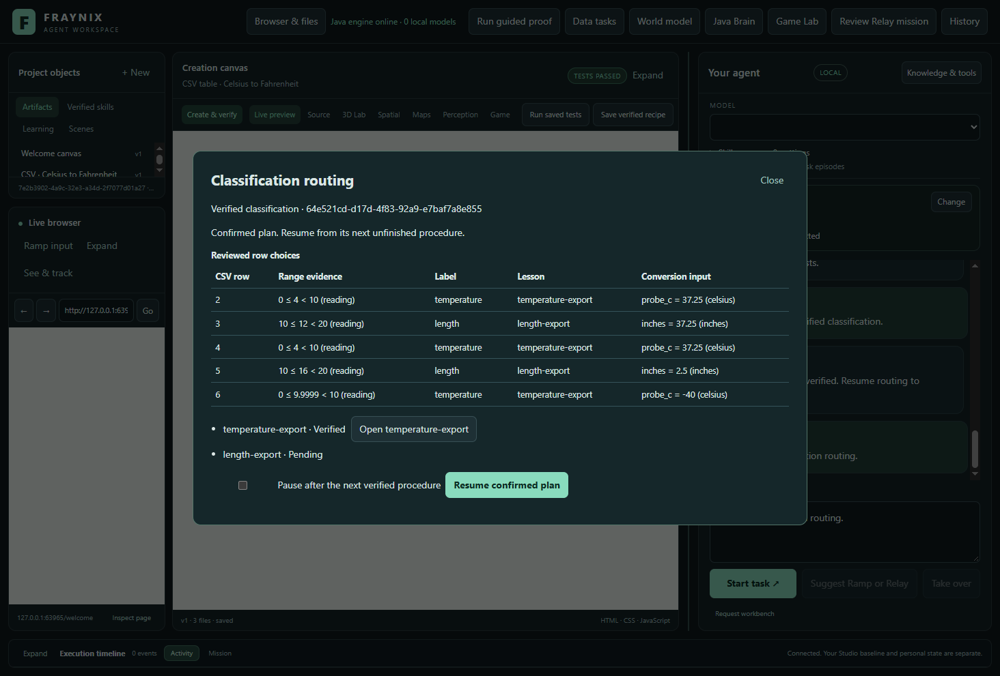
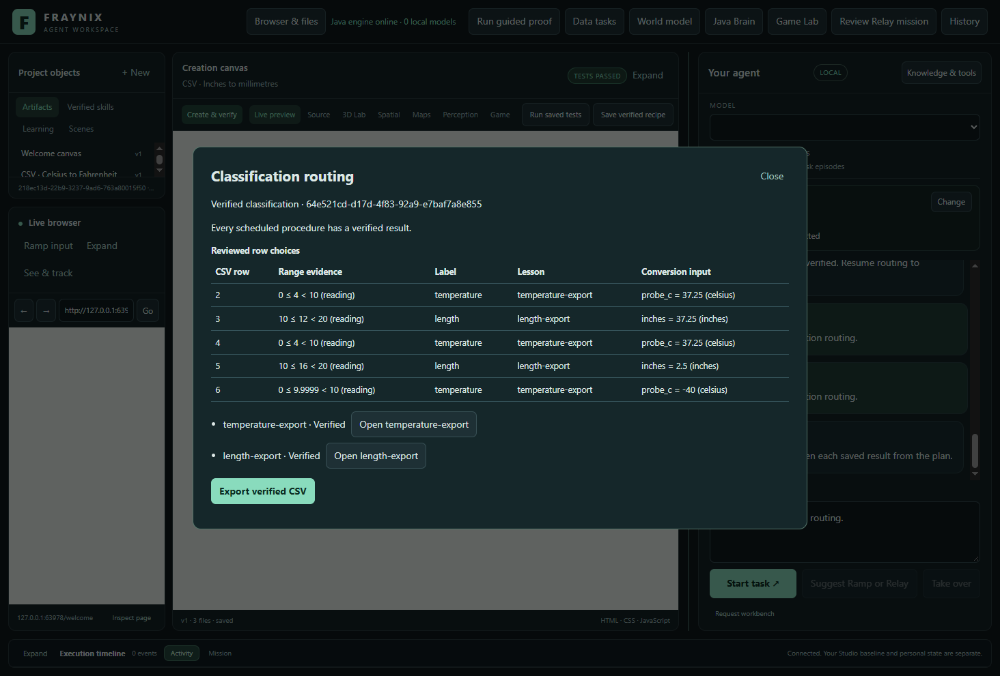
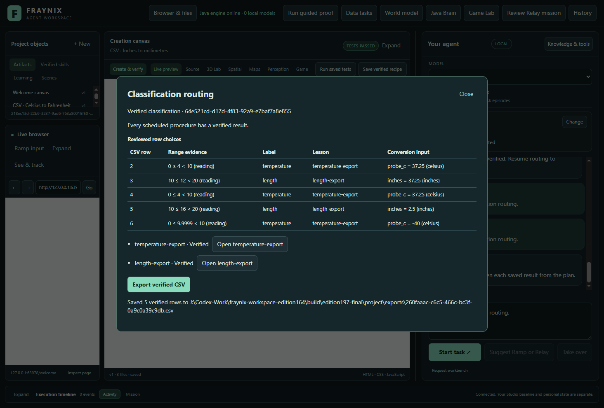

Export routed results in their original CSV row order
Export one CSV from a completed classification routing plan. It preserves source rows and duplicates, adds units to each result and records the verified sources.

After restart, the unfinished plan can resume

The completed plan offers a single verified CSV

The desktop confirms where the five verified rows were saved
System files
Open source